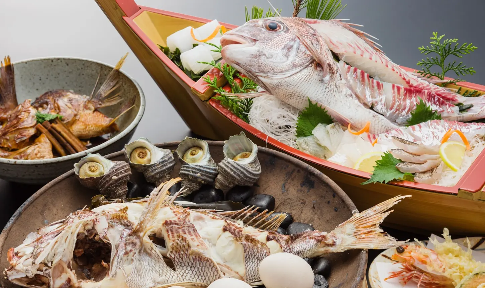
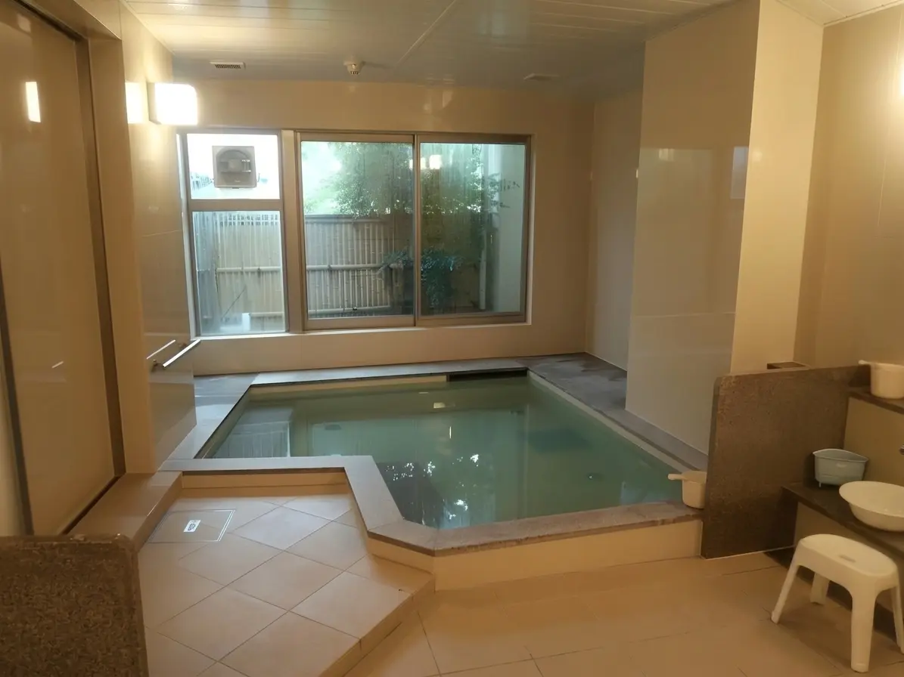
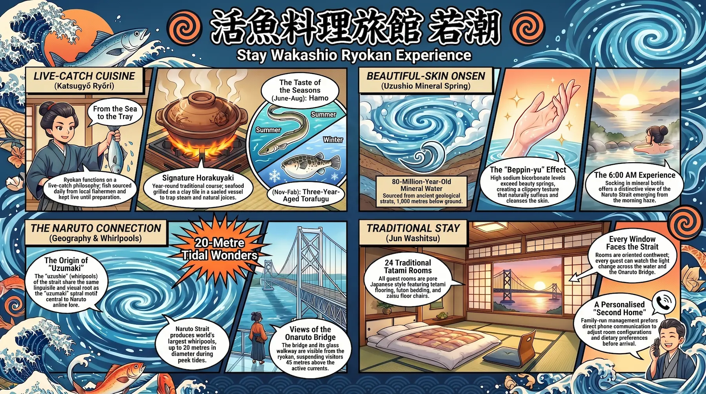
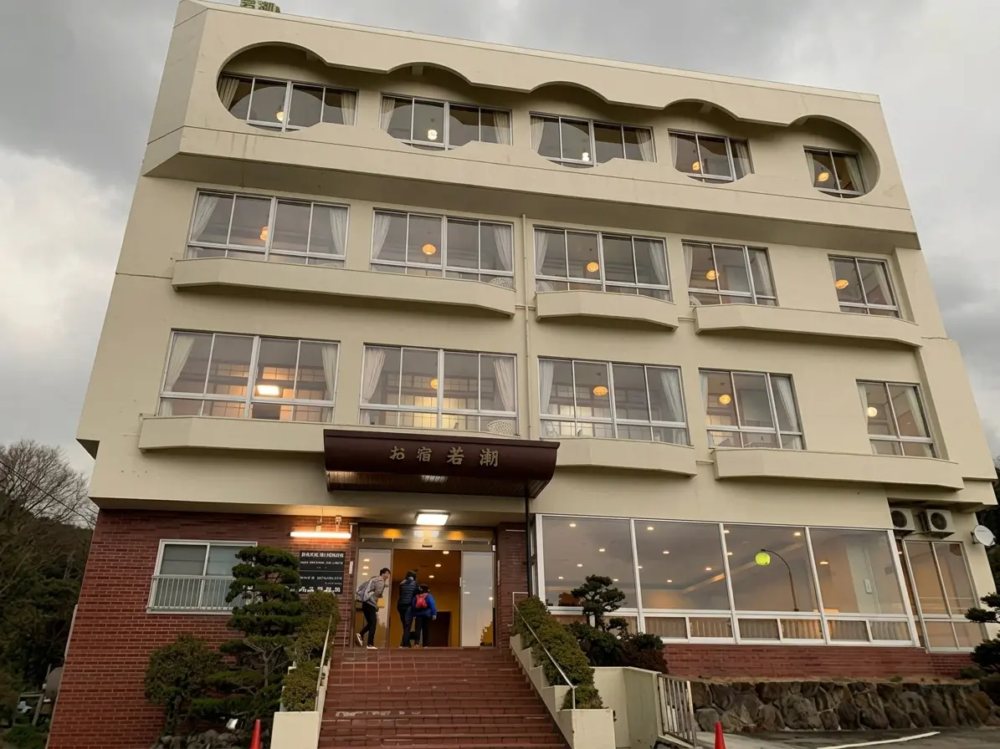
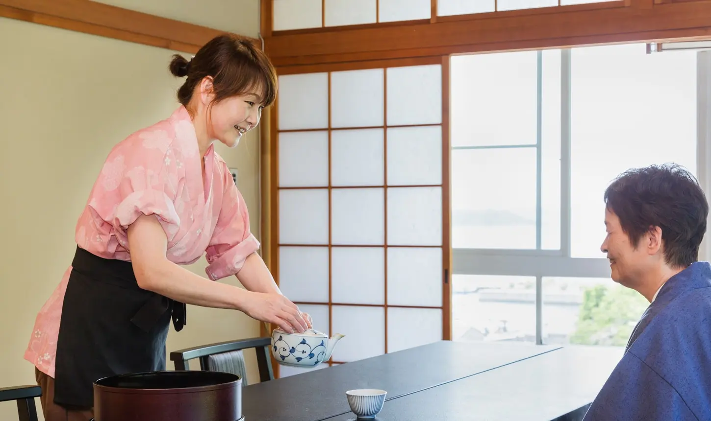
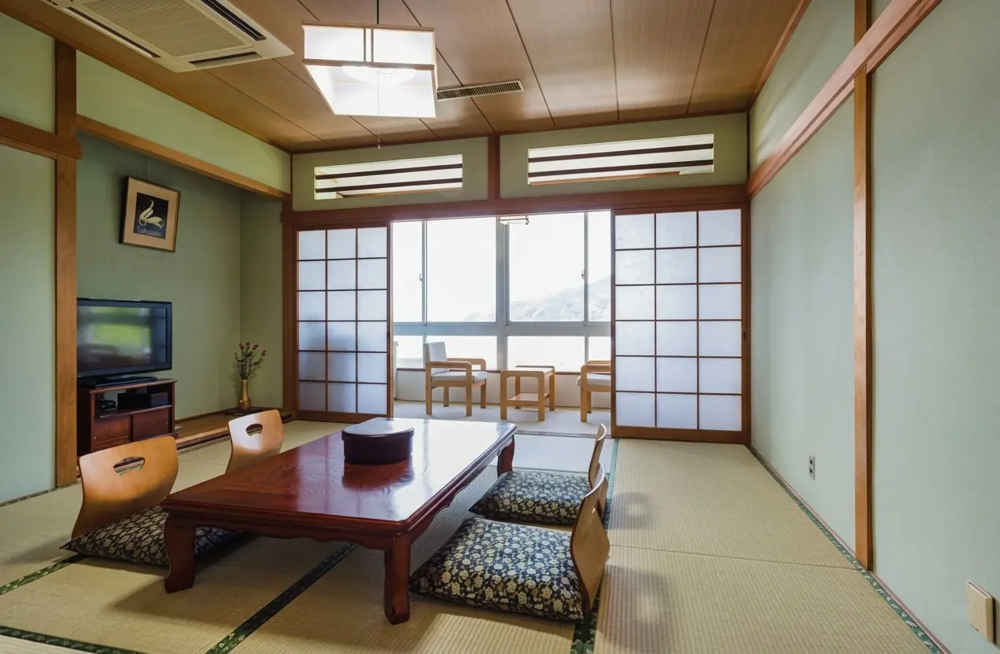
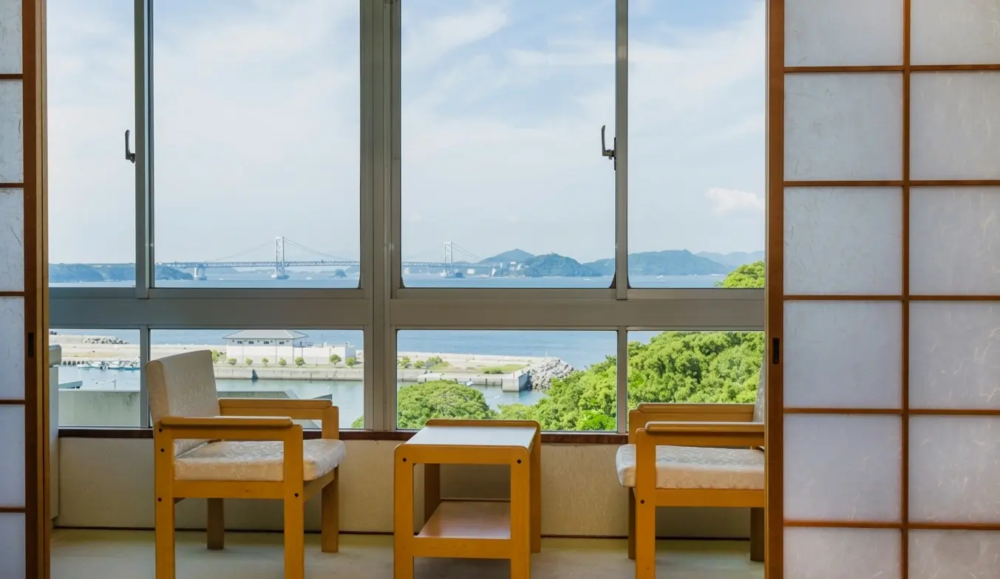
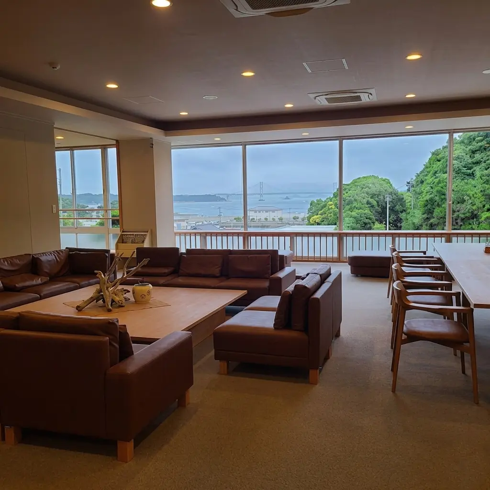
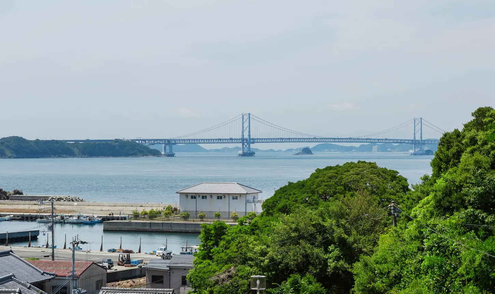

There is a particular kind of Japanese hospitality that no amenity scorecard can fully capture. It is the kind where the innkeeper calls before you arrive — not to confirm your booking, but to ask what you are hoping to eat. Where the fish that appears on your dinner tray was in the sea that morning. Where the building does not overwhelm the view. Wakashio Ryokan — 活魚料理旅館 若潮 — occupies that category with unusual conviction. Perched on the hillside of Anaga at the southernmost tip of Awaji Island, directly facing the Naruto Strait, it is a small, family-operated establishment of twenty-four rooms that has been making exactly this kind of stay possible since 1974. The Onaruto Bridge is visible from the southwest-facing rooms. The sea breeze carries across from the strait. The fish arrives live.
History: A Family Ryokan Since 1974
Wakashio opened in 1974 in the town of Ohseto on the western Awaji coastline — the predecessor establishment, Kappo Ryokan Wakashio, was founded in what was then a small fishing and resort community on the western side of the island. The current property — 活魚料理旅館 若潮 — is the iteration that settled at Anaga in Minamiawaji, on the island's southern tip, facing the Naruto Strait directly. The location is intentional: Anaga sits at the narrow point where Awaji Island and the Tokushima coast of Shikoku face each other across the churning water of the Kii Channel and the Naruto Strait, making it one of the most productive fishing grounds on the island. The ryokan's kitchen is built around access to that proximity — the live-catch philosophy is not a marketing decision but a geographical one. The straits are literally below the building.
The founding philosophy — stated plainly on the ryokan's current homepage — is to function as a second home. The property takes few online reservations deliberately, preferring to speak with guests before arrival to understand their preferences and prepare accordingly. This is not affectation; it is the operational logic of a small establishment where the kitchen needs to know, in advance, who is coming and what they can eat. The result is that Wakashio has maintained a loyal repeat clientele across five decades, including domestic travelers from the Kansai region who return annually and multi-generational family groups who have been guests across different eras of the ryokan's operation.
The Ryokan as a Traditional Japanese Experience: What Wakashio Actually Offers
Wakashio is classified as a katsugyō ryōri ryokan — a live-catch cuisine inn — which defines its identity more precisely than any star rating. The building is modest by the standards of Japan's premium ryokan circuit: there is no grand lobby, no elaborate architectural statement, no spa wing. What the property offers instead is a concentration of things that matter in a different way: all-tatami rooms furnished in the pure Japanese style (jun washitsu), a natural onsen sourced from 1,000 meters below the hillside, a kitchen that receives its main ingredient — live fish — daily from local fishermen and Awaji Island's surrounding waters, and a degree of personal attention from the operators that is calibrated to the scale of the establishment rather than to a corporate hospitality standard.

The rooms all face southwest, toward the Naruto Strait, with the Onaruto Bridge visible from the window as the light changes across the water through the day. Guests are accommodated in Japanese-style rooms on futon bedding, with yukatas provided for onsen use — the complete traditional format, without the hybrid Western-Japanese compromises common in more commercially oriented properties. The building's scale — twenty-four rooms — means that the common spaces, including the dining room and onsen, remain genuinely quiet outside of peak domestic travel seasons. Dinner is served in a private setting for each group of guests, removing the dining-room-as-canteen dynamic that affects larger ryokan. Breakfast follows in the same arrangement, with the option of a table-seat in the morning dining room for couples or guests with mobility considerations, or a private zashiki room for families and larger groups.
One operational note of practical significance: Wakashio suspended its pickup shuttle service from public transport stops as of April 2024. Guests who previously relied on the shuttle from the nearest bus terminal now need to arrange their own transportation from the nearest taxi companies or hire a car. The ryokan's website lists the contact information for two local taxi services: Fukura Naruto Taxi (0799-52-0298) and Minatotaxi at Umi-no-Minato Nishi-Awaji (0799-36-2880). This is a meaningful change for guests arriving by public transport and should be factored into the itinerary.
The Naruto Strait Connection: Uzumaki, the Whirlpools, and the Anime Geography
Wakashio sits on the Awaji Island side of the Naruto Strait — the precise body of water that gives the city of Naruto, across the channel in Tokushima Prefecture, its name. The strait produces some of the largest tidal whirlpools in the world: the uzushio, or whirlpool currents, are generated when the tidal difference between the Seto Inland Sea and the Pacific Ocean forces enormous volumes of water through the narrow channel at high velocity. At spring and autumn peak tides, the whirlpools reach up to twenty meters in diameter. The word uzushio is closely related to uzumaki — the spiral motif at the center of the manga universe that shares this geography. The Uzumaki clan, Naruto Uzumaki's heritage, takes its name from the same root as these whirlpools: uzumaki (渦巻き) means whirlpool or spiral, and the swirling currents visible from Wakashio's rooms and from the Awaji coastline immediately around the property are the physical phenomenon behind both the word and the visual symbol.
From Wakashio's southwest-facing rooms, the Onaruto Bridge is directly visible — the same bridge whose glass-floor walkway, Uzu-no-Michi, suspends visitors 45 meters above the active whirlpools. The ryokan is positioned as close to this geography as any accommodation on the Awaji Island side. For guests drawn to the area by the Naruto connection, Wakashio offers the unusual vantage of sleeping with the strait below your window — the whirlpools audible in the quiet of early morning on high-tide days — while the ryokan's own name, Wakashio (若潮), translates as "young tide," a name that resonates differently in this particular location. The convergence of the coastal landscape with the fictional geography is not manufactured; it is the place itself.
The broader Naruto anime pilgrimage is conducted primarily on the Tokushima side of the strait, in the city of Naruto itself — but the Onaruto Bridge, the whirlpools, and the view of the churning water between the two coasts are accessible from Awaji just as directly, and Wakashio's location makes it a legitimate base for both the pilgrimage and the strait experience without requiring the guest to stay on the Tokushima side.
Location: Southern Awaji Island, on the Edge of the Strait
Wakashio's address is 1060 Anaga, Minamiawaji-shi, Hyogo Prefecture. Anaga is a small coastal settlement at the southernmost point of Awaji Island, looking directly across the Naruto Strait toward the Tokushima coast. The surrounding environment is not urban: the hillside setting means the immediate neighborhood consists of coastal vegetation, the ocean, and the Anaga-koen park — "Midori no Michishirube Anaga Park" — which the ryokan cites as one of its recommended nearby spots, a coastal park on the edge of the rocky shoreline that is among Awaji Island's most distinctive sunset locations. The Ibi beach and its adjacent boat-departure point for uzushio sightseeing cruises are a short distance away. Uzunomichi no Oka, the Great Onaruto Bridge Memorial Museum, is within the five-minute driving radius the ryokan identifies as its walkable vicinity — and the Uzushio Roadside Station, perched at the tip of the cape with panoramic views of the strait, is equally close.
The nearest airport is Tokushima Airport, approximately 27 kilometers and about 31 minutes by car — a distance that requires crossing the Onaruto Bridge and entering Tokushima Prefecture, which gives the approach its own geography. Kansai International Airport is approximately 55 kilometers north via the Akashi Kaikyo Bridge, making Wakashio accessible from the Osaka-Kobe corridor as well. The ryokan has no public transport connection from the front door following the suspension of its shuttle service; a rental car, taxi, or private vehicle is the practical access method. From the Kobe direction, guests travel the full length of Awaji Island on the Awaji Expressway and exit at the island's southern end — a drive that takes approximately 90 minutes from Sannomiya in Kobe under normal traffic conditions.
The Rooms: Twenty-Four Tatami Rooms, All Facing the Strait
Wakashio offers twenty-four rooms in Japanese-style configuration — all washitsu, all fitted with tatami flooring, all oriented to face the southwest and the Naruto Strait. The rooms are furnished in the classical ryokan manner: futon bedding prepared by the staff each evening, zaisu floor chairs, low tables, and the full washitsu aesthetic that distinguishes genuine traditional ryokan from the hybrid formats more common in Japan's larger resort properties. The room inventory is not segmented into multiple tiers with dramatically different outlooks; the defining characteristic of the accommodation is the consistency of the view — every room faces the water, and from the upper-floor and corner positions, the Onaruto Bridge occupies a substantial portion of the horizon.
The booking platforms list the property as offering 24 rooms, with the standard room type a Japanese-style room. Room prices on Jalan — one of the primary domestic booking channels — start from approximately ¥38,500 per person per night for weekday plans including dinner and breakfast, with weekend and holiday rates carrying a modest premium. The ryokan accommodates requests for specific room configurations — table seating for guests with mobility concerns, particular floor preferences, family arrangements — when communicated at the time of reservation. The pre-arrival phone call the property prefers is the channel through which these adjustments are made, and the property's small scale makes genuine responsiveness to these requests operationally realistic in a way that is not possible at larger establishments.
The Onsen: Uzushio Natural Hot Spring, 1,000 Meters Below
Wakashio's onsen is the Uzushio hot spring — うずしお温泉 — drawn from a source 1,000 meters below the hillside, from geological strata approximately 80 million years old. The water is high in sodium bicarbonate content, exceeding the levels associated with Japan's three famous beauty hot springs (Nihon san bijin-yu), and has the characteristic texture of sodium bicarbonate baths: an exceptionally smooth, slightly slippery quality against the skin that the ryokan describes as beppin-yu — "beautiful-skin water." The high bicarbonate concentration softens the skin and removes surface secretions with the efficiency of a mild soap, which is the basis of its reputation as a therapeutic and cosmetic bath. The ryokan's website is direct about this: guests are told they will feel the difference upon entering the water.

The onsen facilities are available from 6:00 AM to 9:00 AM in the morning and from 3:00 PM to 11:00 PM in the evening — the morning window specifically accommodating the Japanese tradition of the pre-breakfast bath, which at Wakashio has the particular appeal of beginning the day in mineral water while the Naruto Strait is lit by the morning light through the windows. The water quality — specifically the sodium bicarbonate profile — is distinctive enough that it is the feature most consistently cited by returning guests as the reason they come back. In a region where onsen are common, a genuinely exceptional mineral composition is what differentiates properties, and Wakashio's Uzushio spring sits at the upper end of that spectrum by the standard measures of therapeutic hot spring classification.
Dining and Meals: Live-Catch Cuisine as the Central Philosophy
The "katsugyō" in Wakashio's full name — 活魚料理旅館, literally "live-fish cuisine inn" — is the defining fact of the dining program, and it is not a loose use of the term. The kitchen sources its primary ingredient — live fish — from Awaji Island's surrounding waters, working directly with local fishermen and the island's fishing ports. The featured preparations change by season because the catch changes by season: sea bream (tai) sashimi and the ryokan's signature horakuyaki grill course are available year-round; hamo (pike conger eel) appears from June through August; the three-year-aged tiger puffer fish (sannen torafugu) runs from November through February; and spring and autumn bring the inshore catch of the season. Each of these is sourced live and prepared at the moment of service — the premium inherent in this approach is not the prestige of the ingredient category but the freshness of the individual specimen.
The standard year-round course centers on the horakuyaki — a method of grilling seafood on a clay tile in a sealed vessel, trapping the steam and juices with the heat — combined with live sashimi presentation, sea bream preparations, and the island's other produce. The Awaji beef option adds Kunigoza-gyu teppanyaki to the seafood course for guests who want both. Seasonal additions can be requested in advance and include preparations rarely available outside of specialist establishments: live lobster, turban shell, abalone, and the seasonal fish of the week. The pricing structure is per-person and all-inclusive of dinner and breakfast, with weekday rates for two to three guests starting at ¥19,250 for the base live-catch course and scaling upward with seasonal ingredients and group size. This is a meaningful commitment per person by the standards of most travel budgets, and it reflects the cost of genuinely live-sourced seafood at this quality level rather than a premium brand surcharge.
Breakfast is served in the Japanese style — pure washoku, a morning spread of rice, miso, grilled fish, pickles, and seasonal sides — in the format calibrated to the guest's physical situation: the morning dining room for couples or mobility-limited guests, a private room for families and groups. The dining program is not supplemented by a bar or a lobby café; Wakashio is a dinner-and-breakfast establishment, and that is the complete scope of its food and drink service. There are no snacks available on demand. This is standard for traditional ryokan of this type.
Cleanliness
Review platforms that carry guest assessments for Wakashio — including Tripadvisor and Jalan — consistently rate the property's cleanliness favorably, with a 4.2 cleanliness score on Tripadvisor and overall positive language in the domestic Japanese review record regarding room preparation and onsen maintenance. The property's small scale is a practical advantage here: with twenty-four rooms under active family management, the standards of preparation between guests are easier to maintain consistently than in larger properties with multiple staff layers. The tatami rooms require specific care — regular turning and airing of the futon, maintenance of the rush grass flooring — and the review record does not suggest any significant departure from expected standards in this regard. The onsen facilities, which are the most hygiene-sensitive common area in any ryokan, are not flagged negatively in available guest accounts. The building is not new, and the honest characterization of the property is that of a well-maintained traditional structure rather than a recently renovated one — the aesthetic is one of preservation, not renovation, which may register differently depending on the guest's expectations of material newness.

Value
Wakashio occupies a specific value position: it is not an inexpensive ryokan, and it is not a luxury brand ryokan. At ¥38,500–¥42,900 per person per night for standard plans including dinner and breakfast, it sits in the mid-upper range of Japan's traditional ryokan market — comparable to mid-tier properties in established onsen towns like Kinosaki or Arima, and priced above the budget end of the Awaji Island accommodation market. The question of value, as with all meal-inclusive ryokan, turns on the dining. If the live-catch seafood course — which is the property's central offering and the thing around which the entire experience is organized — represents genuine quality and genuine freshness, the pricing reflects that. The consistency of the review record on this point (Jalan's 4.7 overall rating; Tripadvisor's 4.4 across 21 reviews; the service score of 4.6 on Tripadvisor) suggests that the kitchen delivers what the concept promises.
The practical constraint on value is the access situation post-shuttle. Guests who need to travel by public transport from Kobe or Osaka will now need to add taxi costs to and from the nearest bus terminal on top of the room rate — an addition that, depending on the group size, may be modest or significant. For guests arriving by car, the free parking on the premises mitigates this entirely. The honest summary is that Wakashio's value proposition is strongest for guests who are specifically seeking the live-catch ryokan experience in a traditional tatami format with a genuinely therapeutic onsen, in a location where the Naruto Strait is both the view and the source of dinner. For guests whose primary criterion is facilities diversity or urban accessibility, there are better-positioned options on the island.
Practical Information
- Check-in: 15:00 Check-out: 10:00
- Price Range: ¥38,500–¥42,900 / person per night (dinner and breakfast included; seasonal plans vary)
- Rooms: 24 rooms — all Japanese-style tatami (jun washitsu), all southwest-facing with Naruto Strait views
- Onsen: Uzushio natural hot spring — sodium bicarbonate mineral water from 1,000m depth; available 6:00–9:00 AM and 15:00–23:00
- Dining: Live-catch cuisine (katsugyō ryōri); year-round horakuyaki course; seasonal hamo (Jun–Aug), sannen torafugu (Nov–Feb); Japanese breakfast included
- Reservation method: Phone reservation preferred; limited online availability — pre-arrival phone call standard to confirm preferences
- Pickup service: Suspended as of April 2024 — taxi required from nearest bus terminal
- Nearest taxis: Fukura Naruto Taxi: 0799-52-0298 / Minatotaxi (Umi-no-Minato Nishi-Awaji): 0799-36-2880
- Nearest access by public transport: High-speed bus from JR Sannomiya (Kobe) toward Fukura; exit at the nearest stop to Anaga; taxi from there
- By car: From Kobe: Akashi Kaikyo Bridge → Awaji Expressway → approx. 90 min; from Tokushima: Onaruto Bridge → Awaji → approx. 40 min
- Parking: Free on-site
- Credit cards accepted: VISA, MasterCard, JCB
- Pets: Not permitted
- Languages: Japanese primary; limited English by phone
Getting There
From Kobe / Osaka
- By car: Akashi Kaikyo Bridge → Awaji Expressway → approx. 90 min from Sannomiya (Kobe)
- By bus: High-speed bus from JR Sannomiya toward Fukura / Namba-Fukura line
- Taxi from nearest bus stop to ryokan: contact Fukura Naruto Taxi (0799-52-0298)
- Pickup shuttle discontinued as of April 2024
From Tokushima / Naruto
- By car: Onaruto Bridge → National Route 28 North → approx. 30–40 min
- By bus: Awaji Kotsu "Awaji-Tokushima Line" from Tokushima to Fukura area
- Tokushima Airport: approx. 31 min by car (27.3 km)
- Taxi from bus terminal: Minatotaxi (0799-36-2880)
Tips for Getting the Most Out of Your Stay
Call ahead — not just to book, but to talk. Wakashio operates on the assumption that the innkeeper knows who is coming and what they need, and the pre-arrival phone call is the mechanism through which the kitchen, the room setup, and any dietary considerations are handled. Guests who arrive without this conversation may find their experience is less precisely calibrated than those who engaged the property on its preferred terms. If you have a specific fish you want to eat, a seasonal preparation you have read about, or a dietary consideration that affects the course, communicate it at this stage.
Book the onsen for the early morning window. The Uzushio spring at 6:00 AM, with the light beginning to come over the Naruto Strait and the bridge emerging from the morning haze, is the most distinctive element of the stay at Wakashio — and it is the thing that is hardest to replicate anywhere else on the island. The sodium bicarbonate water at morning temperature is also slightly cooler and more stimulating than the evening sessions, which suits the Japanese tradition of the pre-breakfast bath rather than the post-dinner relaxation soak.
Arrange transportation before arrival. With the pickup shuttle discontinued, the logistics of arriving without a car now require planning. Contact one of the taxi services listed by the property when you confirm your booking, confirm the bus stop or arrival point, and fix the timing. This is a ten-minute arrangement that eliminates the only genuine friction point in the Wakashio experience.
Plan an evening walk to Anaga Park. The coastal park — Midori no Michishirube Anaga Park — is within walking distance of the ryokan and is described by the property as one of Awaji Island's finest sunset spots. The rocky shoreline facing the Naruto Strait, with the Onaruto Bridge visible to the east and the horizon of the Pacific beyond, is the kind of view that makes the stay's geography explicit in a way that the room window alone does not fully provide.
Beyond Wakashio: The Honest Assessment
Wakashio is a specific kind of ryokan experience, and it is important to be precise about what it is and what it is not. It is not a luxury property in the sense that the word is used in the international hotel industry. There is no concierge, no spa, no fine-dining restaurant in the European sense, no lobby lounge. The building is modest. The rooms are traditional tatami rooms — beautiful in the way that wabi-sabi aesthetics are beautiful, which is to say that the beauty is in the integrity of the form rather than in material opulence. Guests who arrive expecting the scale or facility range of a resort hotel will find that Wakashio is a different category of experience entirely.
What Wakashio offers with genuine conviction is something rarer: a family-operated traditional inn that has spent fifty years perfecting the combination of live-catch coastal cuisine, therapeutic mineral water, and tatami-room quietude in one of Japan's most geographically distinctive settings. The Naruto Strait below the building is not a backdrop — it is an active part of the experience. The fish on your tray came from it. The water in the onsen rose through rock laid down eighty million years before the strait existed. The young tide for which the ryokan is named runs past your window throughout the night. For the guest who understands what they are choosing — and who calls ahead — Wakashio delivers that experience with a consistency and personal attentiveness that is increasingly difficult to find at any price point in Japan's accommodation landscape. That is the honest assessment: a stay at Wakashio is not for everyone, but for the right traveler, it is exactly right.
Hotel Directory
Wakashio Ryokan · 活魚料理旅館 若潮 · 旅館 若潮
Photo Gallery

Photo 1
Photo 2
Photo 3'">
Photo 4'">
Photo 5'">
Photo 6'">Stay Where the Young Tide Runs
Tatami rooms overlooking the Naruto Strait — book ahead, especially for torafugu and hamo seasons.
Visit Official Website →